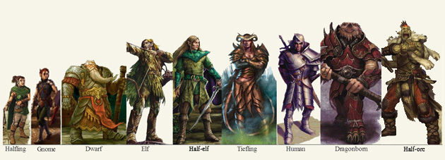
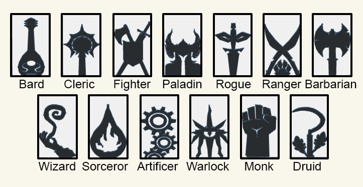
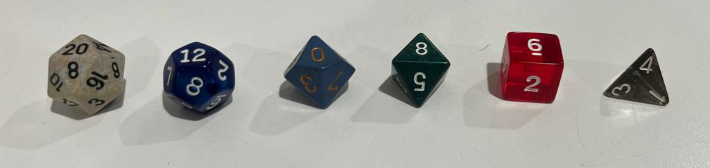

A Brief History of the Game
In 1971, Gary Gygax published the rules for the medieval strategy war-game Chainmail which enjoyed limited success. Those rules included a brief appendix with rules for fantasy battles with dragons, wizards and etc., which were a mere afterthought for Gygax.
From that appendix, Dave Arneson, a war game fan took this appendix and, instead of approaching the game through strategic military battles, he revised the appendix and created the dungeon of the imaginary castle Blackmoor. Over that concept, players playing the roles of fantastic characters explored the dungeon with its traps and perils.
Upon learning of Arneson's derivation of Chainmail, Gygax had him and a friend over at his house to play Blackmoor. Gary was impressed and asked Arneson to share his work proposing for the two of them to co-write a new game. Over the next few months, Gygax had his children play-test the new material and, according to Gygax's son Ernie, the first game of Dungeons & Dragons took place after school, with two boys and one girl exploring a scorpions nest, where they fought a band of kobolds (reptilian humanoids).
As the game rules manuscript was complete, Gygax experienced difficulties finding a company interesting on purchasing the game, until finding Don Kaye and forming in October 1973 the gaming company Tactical Studies Rules (TSR). In 1974, the first printings of the game were sold by mail order, and by 1975, the third printing sold out in just a few months.
Due to the huge success of Dungeons & Dragons, among other similar games, TSR grew extremally fast and Gygax rapidly became a millionaire. As of the late 1970s and early 1980s, D&D found itself under the spotlight due to unexpected factors. The game was under scrutiny of religious fundamentalists, who argued that its was corrupting the young and promoting devil worship, violence and witchcraft. This supposed linked between D&D and such controversial topics was never proved, and it only helped increase the game's popularity.
Currently, the game is at its fifth edition, released in 2014, where the mechanics of the game were revised with the intent of making it very accessible to newcomers, streamlining gameplay, and focusing more on the creative and roleplaying aspects of the D&D. For the game's 50th anniversary, a new edition is expected called One D&D, which is currently being play-tested.
The Rules of Dungeons and Dragons
The topic rules in D&D has always been a point of debate among players. In general, whenever a player has their character attempt to do something that can be considered challenging, the Dungeon Master calls for a roll of a 20 sided by the player, who then adds the corresponding modifiers, and compares to a difficulty challenge to determine if the action was successful or not.
The modifiers are determined by the character's sheet, which are all based on six basic attributes: Strength (STR), Dexterity (DEX), Constitution (CON), Intelligence (INT), Wisdom (WIS), and Charisma (CHA). Each attribute is determined by rolling four 6-sided dice, ignoring the smallest one, and adding the remaining three.
How to play the game
D&D is run by a group of players that share a story told by a Dungeon Master (DM). As the DM describes the environment and events that are taking place, each character acts or reacts according to their own desires.
The materials used while playing D&D can be very simple: paper, pencil, a set of polyhedral dice, and imagination. Or they can get very sophisticated with colored miniatures, terrain and grids. But regardless of the approach, the game always revolves around the shared tales lived the each player's character. While building their characters, players choose a combination of race and class that matches their vision for their character.
The Races
The basic races provided on the Player's Handbook are:
The Classes
The basic classes provided on the Player's Handbook are:
The Dice
D&D uses 6 different polyhedral dice as on the picture below
Winning?
Winning can be a very obscure concept in Dungeons and Dragons. Since players are free to do pretty much anything they want, just surviving a quest can be considered a victory. Additionally, as the multiple layers of the plot unfold, each character may achieve personal goals or accomplish considerable and memorable feats. As the game progresses, the characters also evolve, and this is taken into account as class levels, where whenever a character levels up, they unlock various types of feats and spells. So, just levelling up can also be considered a victory on this game. Finally, if ever a character lives long enough to reach level 20, they also reach a status of extreme power and fame on the setting where they are playing, and are as powerful as they will ever become.
Tips and Strategies
There is not much to say other than "be careful and survive." You never know what will be coming once you turn a corner inside a dungeon: it could be chest full of treasure, your long lost friend who everybody assumed dead, a hoard of undead, or even a portal to another plane. Paying attention and taking notes from the Dungeon Master's description always helps, and sometimes there hidden hints. Another advice would be to always investigate before engaging, by using your skills to find out more information of what's to come. Last, but not least, connect with the other members of our adventuring party, if everybody cooperates towards achieve a certain goal, the chances of survival increase considerably.